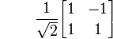
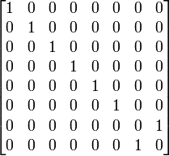

matrix.coffee contains the Matrix, Hermitian and Unitary classes.
Some specific Error types for these classes:
MatrixConstructorError:These errors are thrown when something is wrong in the
Matrixconstructor
class MatrixConstructorError extends ErrorMatrixMathError:These errors are thrown when something is mathematically wrong a
Matrixfunction
class MatrixMathError extends ErrorHermitianConstructorError:These errors are thrown when something is wrong in the
Hermitianconstructor
class HermitianConstructorError extends ErrorUnitaryConstructorError:These errors are thrown when something is wrong in the
Unitaryconstructor
class UnitaryConstructorError extends ErrorThe Matrix class provides a low-level representation of Matrices.
class MatrixThe
Matrixconstructor requires one parameters:
- A
2D Arrayas a representation of the matrix, containing onlyComplexnumbers:mThe constructor function also takes a single optional parameter.
- A
Numberwhich multiplies the whole matrix by a scaling value:constant- defaults to1If the arguments are of the incorrect type, the constructor will throw a
MatrixConstructorError.
constructor: (m, constant = 1) ->
unless m?
throw MatrixConstructorError '`m` must be defined.'
unless _.isArray m
throw MatrixConstructorError '`m` must be an Array.'
for obj in m
unless _.isArray obj
throw MatrixConstructorError '`m` must be a 2D Array.'
unless m.length > 0
throw MatrixConstructorError '`m` must have more than 0 rows.'
length = -1
for n in m
if length < 0
length = n.length
unless n.length is length
throw MatrixConstructorError '`m` must contain rows of one length.'
unless length > 0
throw MatrixConstructorError '`m` must have more than 0 columns.'
for n in m
for obj in n
unless obj instanceof $C
throw MatrixConstructorError '`m` must only contain Complex numbers.'
complexM = []
for x in [0...m.length]
for y in [0...m[x].length]
complexM[x] ?= []
complexM[x][y] = new $C(m[x][y]).multiply constant
@matrix = complexM
@rows = @matrix.length
@columns = @matrix[0].lengthThese functions are attached to the Matrix class and provide easy access to some commonly generated Matrices:
Matrix.Identitycreates a newMatrixwhere the values Mij where i = j are set to1. The size of theMatrixis determined byn, where the resultingMatrixwill be 2n x 2n
@Identity: (n = 1) ->
n = Math.pow 2, n
matrix = []
for r in [0...n]
matrix[r] = []
for c in [0...n]
matrix[r][c] = if r is c then new $C(1) else new $C(0)
new Matrix(matrix)
Matrix.Onescreates a newMatrixwhere all values are set to1. The size of theMatrixis determined byn, where the resultingMatrixwill be 2n x 2n
@Ones: (n = 1) ->
n = Math.pow 2, n
matrix = []
for r in [0...n]
matrix[r] = []
for c in [0...n]
matrix[r][c] = new $C(1)
new Matrix(matrix)
Matrix.Zeroescreates a newMatrixwhere all values are set to0. The size of theMatrixis determined byn, where the resultingMatrixwill be 2n x 2n
@Zeroes: (n = 1) ->
n = Math.pow 2, n
matrix = []
for r in [0...n]
matrix[r] = []
for c in [0...n]
matrix[r][c] = new $C(0)
new Matrix(matrix)
COFFEESCRIPT:
hadamard = $U.Hadamard() hadamard.print 'Hadamard'CONSOLE OUTPUT:
Hadamard MATRIX: [0.7071067811865475 + 0i, 0.7071067811865475 + 0i] [0.7071067811865475 + 0i, -0.7071067811865475 + 0i]
print: (id) ->
console.log "#{id} MATRIX:"
for r in [0...@rows]
str = '['
for c in [0...@columns]
str += "#{@matrix[r][c]}, "
str = "#{str[0...str.length - 2]}]"
console.log str
thisThese functions are attached to each instance of the Matrix class - changing the function of one Matrix changes the function on all other Matrixs as well. These functions act on a Matrix instance in place - the original object is modified.
scalescales each value in a Matrix by a given scaling factor,s.
scale: (s) ->
for r in [0...@rows]
for c in [0...@columns]
@matrix[r][c].multiply s
this
negatescales each value in a Matrix by-1.
negate: ->
this.scale -1
transposetransposes a Matrix by flipping the Matrix across the trace.
transpose: ->
trans = clone(this)
for r in [0...@rows]
for c in [0...@columns]
trans.matrix[c][r] = @matrix[r][c]
trans
conjconjugates a Matrix by conjugating each of the values in the Matrix.
conj: ->
conj = clone(this)
for r in [0...@rows]
for c in [0...@columns]
conj.matrix[r][c] = @matrix[r][c].conjugate()
conj
isUnitarytests if a Matrix is unitary by checking that UUct = I, where Uct is the conjugate transpose of U, and I is an Identity matirx.In quantum systems, all matrices representing gate operations must be unitary. This function is therefore called whenever a
Unitaryis initialised.
isUnitary: ->
if @rows isnt @columns
no
else
@size = @rows
conjTrans = clone(this).conj().transpose()
if Matrix.Multiply(this, conjTrans).isIdentity() then yes else no
isHermitiantests if a Matrix is Hermitian by checking that Uct = U, where Uct is the conjugate transpose of U.In quantum systems, all matrices representing measurement operations must be Hermitian. This function is therefore called whenever a
Hermitianis initialised.
isHermitian: ->
if @rows isnt @columns
no
else
@size = @rows
for r in [0...@size]
for c in [0...@size]
val = @matrix[r][c]
conj = $C.Conjugate @matrix[c][r]
if not $C.Equals val, conj then return no
yes
isIdentitytests if a Matrix is an Identity matrix by checking that Uij is1where i = j, and0everywhere else.
isIdentity: ->
if @rows isnt @columns
no
else
for r in [0...@rows]
for c in [0...@columns]
if r is c
if not @matrix[r][c].equals new $C(1) then return no
else
if not @matrix[r][c].equals new $C(0) then return no
yes
clonecreates an exact copy of the existing Matrix.
clone = (m) ->
new Matrix(m.matrix)These functions belong to the Matrix class - any object arguments are not modified and a new object is always returned.
Matrix.Addadds any number ofMatrixtogether.
@Add = (m1, m2, mn...) ->
if m1.columns isnt m2.columns and m1.rows isnt m2.rows
throw MatrixMathError 'Matrix dimensions incorrect for addition.'
result = []
for i in [0...m1.rows]
result[i] = []
for j in [0...m1.columns]
result[i][j] = $C.Add(m1.matrix[i][j], m2.matrix[i][j])
add = new Matrix(result)
for m in mn
add = Matrix.Multiply add, m
add
Matrix.Multiplymultiplies any number ofMatrixstogether.
@Multiply = (m1, m2, mn...) ->
if m1.columns isnt m2.rows
throw MatrixMathError 'Matrix dimensions incorrect for multiplication.'
result = []
for i in [0...m1.rows]
result.push []
for r in [0...m1.rows]
for c in [0...m2.columns]
val = new $C(0)
for k in [0...m1.columns]
val.add $C.Multiply(m1.matrix[r][k], m2.matrix[k][c])
result[r][c] = val
mul = new Matrix(result)
for m in mn
mul = Matrix.Multiply mul, m
mul
Matrix.Kronevaluates the Kronecker Product of any number ofMatrix.
@Kron = (matrices) ->
if matrices.length is 1
return matrices[0]
else
m1 = matrices[0]
m2 = matrices[1]
kronProd = []
height1 = m1.rows
width1 = m1.columns
height2 = m2.rows
width2 = m2.columns
for m in [0...height1 * height2]
kronProd.push []
for m in [0...height1]
for n in [0...width1]
for p in [0...height2]
for q in [0...width2]
newM = m * height2 + p
newN = n * width2 + q
val = $C.Multiply m1.matrix[m][n], m2.matrix[p][q]
kronProd[newM][newN] = val
return Matrix.Kron [new Matrix(kronProd)].concat matrices[2..]The Hermitian class provides a representation of Hermitian matrices, which are a special type of Matrix which has the property that Uct = U, where Uct is the conjugate transpose of U.
In quantum systems, all matrices representing measurement operations must be Hermitian.
class Hermitian extends MatrixThe
Hermitianconstructor requires one parameters:
- A
2D Arrayas a representation of the matrix, containing onlyComplexnumbers:mThe constructor function also takes a single optional parameter.
- A
Numberwhich multiplies the whole matrix by a scaling value:constant- defaults to1The Matrix constructor is called with these parameters, and the resulting Matrix is tested for being Hermitian. If it is not, the constructor will throw a
HermitianConstructorError.
constructor: (m, constant = 1) ->
super(m, constant)
unless @isHermitian()
throw HermitianConstructorError 'Matrix is not Hermitian.'The Unitary class provides a representation of Unitary matrices, which are a special type of Matrix which has the property that UctU = I, where Uct is the conjugate transpose of U, and I is an Identity matrix.
In quantum systems, all matrices representing gate operations must be unitary.
class Unitary extends MatrixThe
Unitaryconstructor requires one parameters:
- A
2D Arrayas a representation of the matrix, containing onlyComplexnumbers:mThe constructor function also takes a single optional parameter.
- A
Numberwhich multiplies the whole matrix by a scaling value:constant- defaults to1The Matrix constructor is called with these parameters, and the resulting Matrix is tested for being Unitary. If it is not, the constructor will throw a
UnitaryConstructorError.
constructor: (m, constant = 1) ->
super(m, constant)
unless @isUnitary()
throw UnitaryConstructorError 'Matrix is not Unitary.'These functions are attached to the Unitary class and provide easy access to some commonly generated quantum gates:
Unitary.PauliX creates a new
Unitarythat represents the PauliX (σx) gate:
@PauliX = ->
new Unitary([[new $C(0), new $C(1)],
[new $C(1), new $C(0)]])Unitary.PauliY creates a new
Unitarythat represents the PauliY (σy) gate:
@PauliY = ->
new Unitary([[new $C(0), new $C('-i')],
[new $C('i'), new $C(0)]])Unitary.PauliZ creates a new
Unitarythat represents the PauliZ (σz) gate:
@PauliZ = ->
new Unitary([[new $C(1), new $C(0)],
[new $C(0), new $C(-1)]])Unitary.S creates a new
Unitarythat represents the S gate:
@S = ->
new Unitary([[new $C(1), new $C(0)],
[new $C(0), new $C('i')]])Unitary.T creates a new
Unitarythat represents the Phase shift gate (withθ=π / 4by default):
@T = (θ) ->
e = $C.Exp
π = Math.PI
if not θ?
θ = π / 4
iθ = new $C('i').multiply(θ)
new Unitary([[new $C(1), new $C(0)],
[new $C(0), e(iθ)]])Unitary.Hadamard creates a new
Unitarythat represents the Hadamard gate:
@Hadamard = ->
oneOverRoot2 = 1 / Math.sqrt 2
new Unitary([[new $C(1), new $C(1)],
[new $C(1), new $C(-1)]], oneOverRoot2)Unitary.SqrtNot creates a new
Unitarythat represents the SqrtNot gate:
@SqrtNot = ->
oneOverRoot2 = 1 / Math.sqrt 2
new Unitary([[new $C(1), new $C(-1)],
[new $C(1), new $C(1)]], oneOverRoot2)Unitary>CreateNBitHaystack is used to create the Unitary oracle that is used in the Deutsch-Jozsa Algorithm.
@CreateNBitDeutschJozsaOracle = (n, solution) ->
range = [0...(2* Math.pow 2, n)]
x = _.flatten([i,i] for i in [0...(range.length / 2)])
y = (i % 2 for i in range)
solution = solution.toString(2)
while solution.length < range.length /2
solution = "0#{solution}"
fx = _.flatten([i,i] for i in solution.split '')
yXORfx = (y[i] ^ fx[i] for i in range)
xy = (parseInt "#{x[i].toString(2)}#{y[i].toString(2)}", 2 for i in range)
xyXORfx = (parseInt "#{x[i].toString(2)}#{yXORfx[i].toString(2)}", 2 for i in range)
matrix = $M.Zeroes n + 1
for i in [0...xy.length]
matrix.matrix[xy[i]][xyXORfx[i]] = new $C(1)
matrixUnitary>CreateNBitHaystack is used to create the Unitary oracle that is used in Grover’s algorithm, with the appropriate rows flipped for the given solution, e.g.:
For
n=2, andsolution=3
@CreateNBitHaystack = (n, solution) ->
if solution >= Math.pow(2, n) or solution < 0
throw MatrixMathError 'The solution must be smaller than 2^n and greater than 0.'
matrix = $U.Identity(n + 1).matrix
matrix[2 * solution][2 * solution] = new $C(0)
matrix[2 * solution][2 * solution + 1] = new $C(1)
matrix[2 * solution + 1][2 * solution] = new $C(1)
matrix[2 * solution + 1][2 * solution + 1] = new $C(0)
new $U(matrix)The Matrix, Hermitian and Unitary classes are added to the global root object, with the aliases $M, $O and $U respectively.
root = exports ? this
root.$M = root.Matrix = Matrix
root.$O = root.Hermitian = Hermitian
root.$U = root.Unitary = Unitary